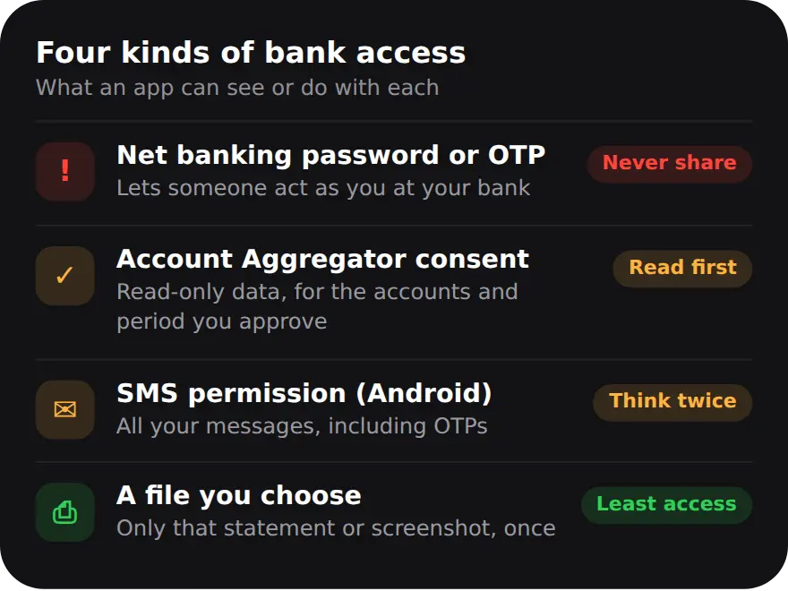
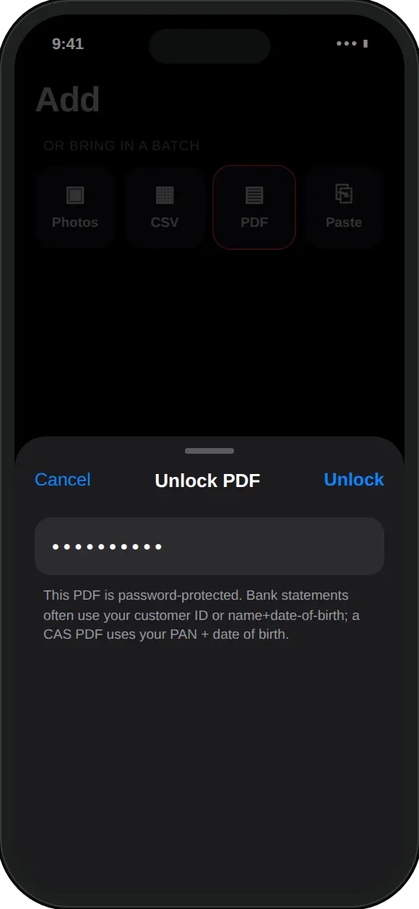

What does linking your bank account to an app mean?
It can mean four different things, and they are not equally risky: your login, an Account Aggregator consent, permission to read your SMS, or a file you choose to share.
The question to ask is not whether an app is linked, but what it can see and what it can do. Your login lets someone act as you. A consent shares read-only data for a set period. SMS access on Android covers every message, including OTPs. A statement or screenshot shares only what is in that one file, once.

Is it safe to give an app your net banking password?
No. Your net banking password, OTPs and UPI PIN are what let someone act as you at your bank. Do not share them with any app or any person.
Your bank will never ask you to share them, and banks remind customers of this all the time. It does not matter how useful the app is or how good it looks. If something asks for your password or an OTP so it can "fetch" your transactions, close it. To see your spending, an app only needs to know what you paid. It never needs the keys to your account.
Is Account Aggregator consent safe?
It is the regulated way to share bank data in India. It is read-only and only works with your consent, but you should still read what you are approving.
Account Aggregators are licensed by the RBI to pass your financial data to an app or lender when you approve it. Sharing data this way does not let the app move your money. Each consent spells out which accounts, what period of history, how often the data is fetched and when the consent ends. Before you approve, check that these match what you need. A one-time request for three months of history is very different from a daily fetch that runs for years.
You can pause or revoke a consent from your Account Aggregator app. That stops future sharing. It does not pull back data that was already shared, so the receiving app's own privacy policy still matters.
What should I check before giving a money app any access?
Ask whether the app needs the access at all, where your data will live, and whether you can lock it, export it and delete it.
- Does it need this? Tracking your spending needs your transactions, not your bank login. Give the least access that does the job.
- Where is the data kept? On your phone, or on the company's servers? Read the App Privacy label on the App Store, which says what an app collects.
- Is there an account? An account usually means your data sits on a server. Read more on why no-account apps are safer.
- Can you lock and leave? Look for an app lock, a way to export your data, and a way to delete it.
On iPhone there is one less thing to worry about: iPhone apps cannot read your SMS, so no app can quietly pick up your OTPs from your messages.
How do I track my bank spending without linking my bank?
Bring your transactions in yourself from a statement, a screenshot or a bank SMS, and review them before they are saved. In MoneyOS, a statement takes five steps:
- Download your statement. From net banking or your bank's email, save the statement PDF to Files. This is the one place you use your bank login, on your bank's own site or app.
- Open the PDF import. In MoneyOS, open Add. Under Or bring in a batch, tap PDF and pick the file.
- Unlock it on your iPhone. If the PDF is password-protected, type the password in the Unlock PDF sheet. It is used to open the file on your phone and is not saved.
- Review and import. Every row lands in a review list first, with likely repeats flagged. Untick anything you do not want and tap Import.
- Lock the app. In Settings, turn on Lock with Face ID, so opening MoneyOS needs Face ID or your passcode.
The statement is read on your iPhone. Nothing is sent to us, because the app has no server of ours to send it to. Read the full guide to importing a password-protected statement.

For day-to-day payments, you can pick up to 10 screenshots of your payment history at once, or paste a bank SMS. Every row lands in the same review list, so nothing saves without your OK. Here is how to track UPI payments without a bank login.
Where does MoneyOS keep my data?
On your iPhone. There is no account, no bank connection and no server belonging to us, and the App Privacy label says Data Not Collected.
iCloud sync is optional, off by default, and goes through your own private iCloud. Encrypted backups use a passphrase only you hold. The honest trade-off is that nothing arrives on its own: you bring your transactions in, which takes a few minutes a week. In return, no company holds a copy of your spending. Read the privacy policy for the details.
Frequently asked questions
Is it safe to link my bank account to an app?
It depends on what you share. A file you choose, such as a statement, shares only that file. Account Aggregator consent shares read-only data for the period you approve. Your net banking password, OTP or UPI PIN should never be shared with any app or person.
Should I give an app my net banking password?
No. Your password, OTPs and UPI PIN are what let someone act as you at your bank. Your bank will never ask you to share them, and you do not need to share them to track your spending.
What is Account Aggregator consent?
It is the RBI-regulated way to share your financial data with an app or lender, only with your consent. The consent sets which accounts, what period, how often and for how long. You can revoke it from your Account Aggregator app, which stops future sharing.
Does MoneyOS connect to my bank?
No. MoneyOS never asks for bank credentials and has no bank connection. You bring your data in yourself: by typing or speaking, from screenshots, from a pasted bank SMS, or from CSV and PDF statements.
Where does MoneyOS keep my data?
On your iPhone. There is no account and no server belonging to us, and the App Privacy label says Data Not Collected. iCloud sync is optional, off by default, and goes through your own private iCloud.
Is MoneyOS free?
Yes. The whole app is free, with no subscription, no ads and no in-app purchases.